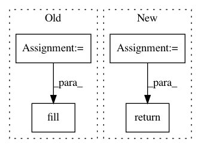

4d641f7f56d4da78303c5a55846baa97d6505c86,object_detection/core/post_processing.py,,batch_multiclass_non_max_suppression,#Any#Any#Any#Any#Any#Any#Any#Any#Any#Any#Any#Any#,167
Before Change
// If num valid boxes aren"t provided, create one and mark all boxes as
// valid.
if num_valid_boxes is None:
num_valid_boxes_shape = tf.expand_dims(batch_size, axis=0)
num_valid_boxes = tf.fill(num_valid_boxes_shape, num_anchors)
// If masks aren"t provided, create dummy masks so we can only have one copy
// of single_image_nms_fn and discard the dummy masks after map_fn.
if masks is None:
After Change
parallel_iterations=parallel_iterations)
if original_masks is None:
batch_nmsed_masks = None
return (batch_nmsed_boxes, batch_nmsed_scores, batch_nmsed_classes,
batch_nmsed_masks, batch_num_detections)
In pattern: SUPERPATTERN
Frequency: 3
Non-data size: 4
Instances
Project Name: tensorflow/models
Commit Name: 4d641f7f56d4da78303c5a55846baa97d6505c86
Time: 2017-07-18
Author: derekjchow@gmail.com
File Name: object_detection/core/post_processing.py
Class Name:
Method Name: batch_multiclass_non_max_suppression
Project Name: GPflow/GPflow
Commit Name: bd1e9c04b48dd5ccca9619d5eaa2595a358bdb08
Time: 2020-01-31
Author: st--@users.noreply.github.com
File Name: gpflow/kernels/statics.py
Class Name: Constant
Method Name: K
Project Name: GPflow/GPflow
Commit Name: bd1e9c04b48dd5ccca9619d5eaa2595a358bdb08
Time: 2020-01-31
Author: st--@users.noreply.github.com
File Name: gpflow/kernels/statics.py
Class Name: White
Method Name: K